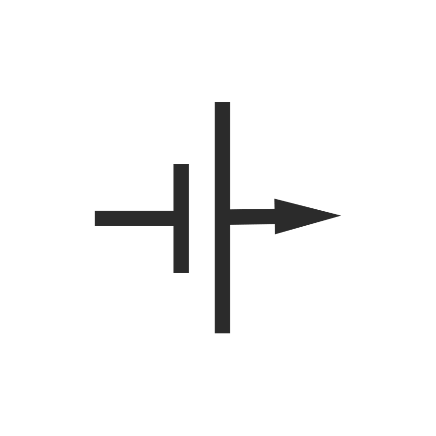

重庆大学千里战队
CQU QIANLI
首页
关于千里
战队简介
组织架构
精神和文化
管理和协作
发展历程
技术组别
机械结构组
电气控制组
视觉算法组
硬件开发组

宣传运营组
责任组别
管理层
竞技战术组
基建效率组
千里博物馆
资料站
照片墙
档案馆
名人堂
故事会
留言板
加入我们
招新信息
各组方向
人才画像
Q&A
联系方式
TEAM ARCHIVE
档案馆
记录每个赛季的机器人阵容、比赛战绩与关键节点。
HISTORICAL MATCHES
历史比赛
本页仅统计 RMUC 超级对抗赛；联盟赛记录尚未纳入。